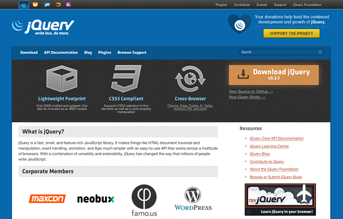
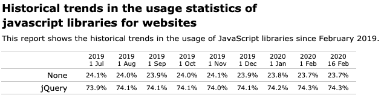
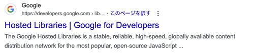

jQueryとは
jquery.com
- よく使うJavaScriptを簡単に使えるようにしたもの
- JavaScriptのライブラリのひとつ
- HTMLやCSSを操作して、要素・属性・スタイルを追加・変更・削除できる
- 要素に対してアニメーションできる
- 主要なブラウザをサポート（ブラウザ依存を気にしなくてよい）
- 記述の仕方は、CSSに似ている
- オープンソース（MITライセンス+GPLライセンス）
- 「Write Less, Do More」がモットー
- jQueryのバージョンは、1.x系と2.x系と3.x系に分類できます


デザイナーのためのjQuery
- 「メニューの開閉」「要素の非表示・表示」「画像のポップアップ表示」などWebページの表示されているものに対しての操作が中心
jQueryを導入したい
ダウンロードして利用する場合
- compressed〜……改行などを除去してファイルサイズを抑えたファイル
- uncompressed〜……圧縮前の元ファイル。構造が見やすい
CDNを利用する

<script src="https://ajax.googleapis.com/ajax/libs/jquery/3.7.1/jquery.min.js"></script>
メリット
- サーバーの負荷が軽くなる
- 表示する速度が上がる
つまり、CDNを使うと、ページを読み込む時間が短くなり、より快適なWebサイトを作ることが可能になります。
《基本形》
<!DOCTYPE html> <html lang="ja"> <head> <meta charset="UTF-8"> <meta name="viewport" content="width=device-width, initial-scale=1.0"> <title>jQuery</title> </head> <body> <script src="https://ajax.googleapis.com/ajax/libs/jquery/3.7.1/jquery.min.js"></script> <script> //jQueryを利用したコード </script> </body> </html>
ページ構成を読み込んでから処理を開始
- jQueryではhtmlの様々な要素を操作できますが「読み込まれていないもの」を操作することはできません
- なのでhtmlの「ページ構成」を読み込んでから操作を開始するようにする必要があります
$( /*-------------------------------------------------- ページ構成が読み込まれたら この()内の処理が実行されます。 ---------------------------------------------------*/ );
処理はfunctionで設定する
$(function(){ /*-------------------------------------------------- 処理が実行されます。 ---------------------------------------------------*/ });
基本フォーマット
<!DOCTYPE html> <html lang="ja"> <head> <meta charset="UTF-8"> <title>jQueryの練習</title> </head> <body> <script src="https://ajax.googleapis.com/ajax/libs/jquery/3.7.1/jquery.min.js"></script> <script> $(function(){ }); </script> </body> </html>